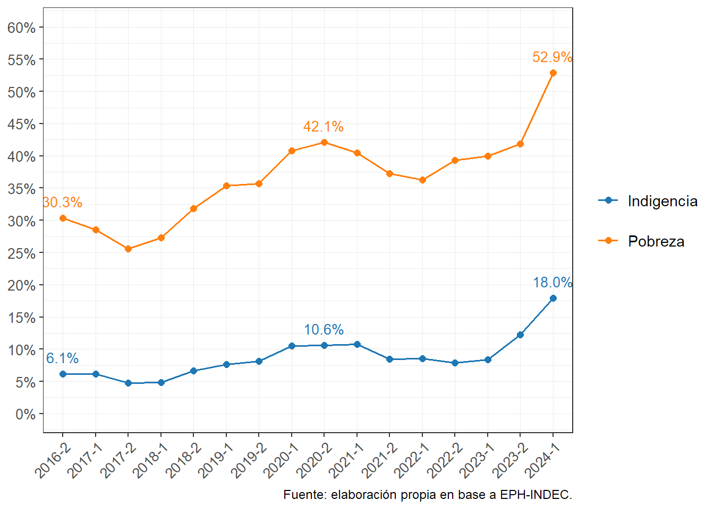
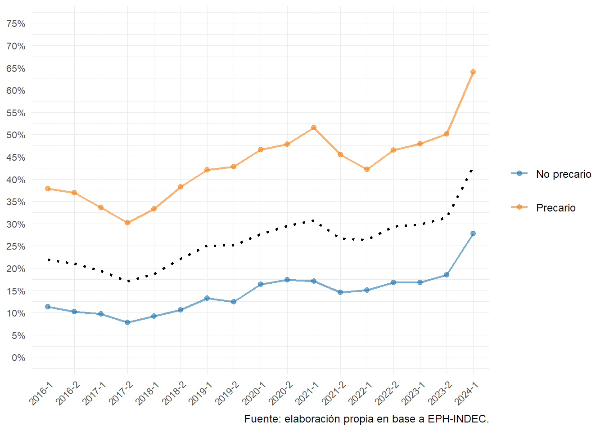
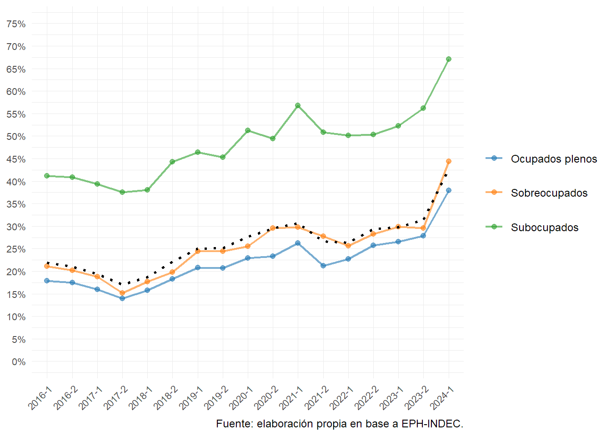
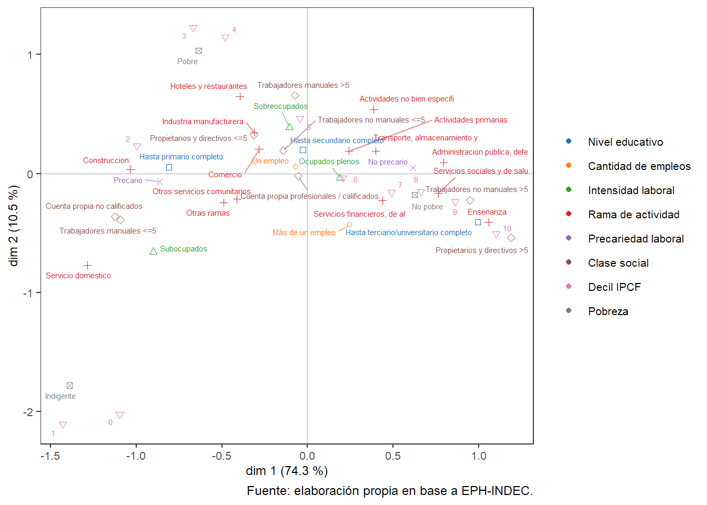
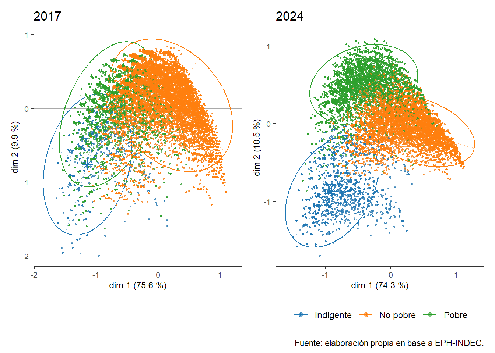
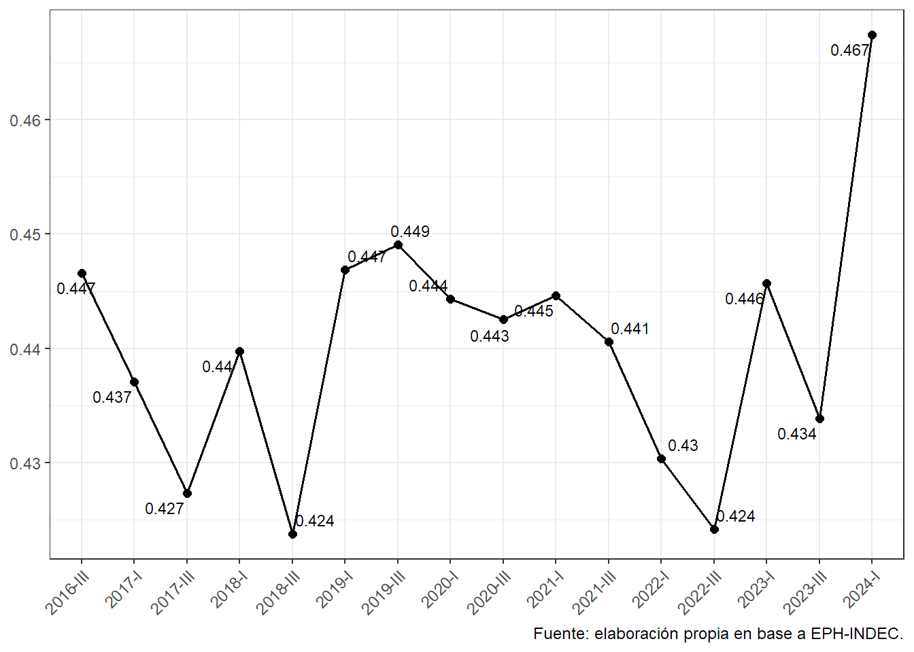
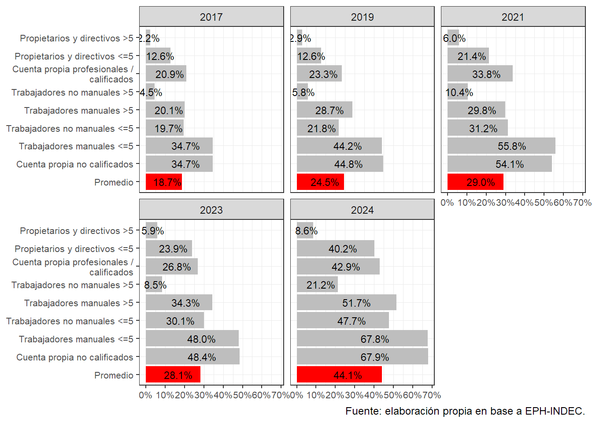
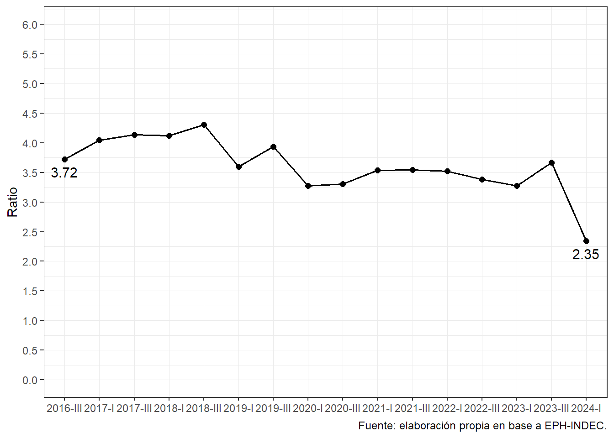

Evolución reciente de la pobreza
Considerando la relevancia central del indicador de pobreza en Argentina, medido a través de los umbrales de la Línea de Pobreza y la Línea de Indigencia, y su capacidad de incidir en las tres principales agendas de preocupación —pública, política y académica—, es oportuno exponer los resultados, tendencias y particularidades que adopta la pobreza en el país.
Los estudios recientes subrayan un cambio significativo en la configuración de la pobreza en los últimos años, destacándose especialmente la emergencia del concepto de “trabajadores pobres”. Este fenómeno refleja una situación en la que, a pesar de estar empleados, una parte de la población no logra alcanzar niveles de ingreso suficientes para superar la pobreza. Este cambio en la estructura social pone en evidencia la necesidad de analizar no solo los ingresos, sino también los mecanismos de inserción ocupacional y la calidad del empleo disponible.
Además, la pobreza en Argentina está determinada por una interacción compleja entre factores estructurales y coyunturales. Entre los factores estructurales se incluyen variables de largo plazo, como las desigualdades históricas en la distribución del ingreso, las deficiencias en la formación educativa y la segmentación del mercado laboral. Por su parte, los factores coyunturales se refieren a eventos de corto y mediano plazo que afectan la economía, como crisis económicas, fluctuaciones inflacionarias, o la implementación de políticas públicas inadecuadas o insuficientes para contrarrestar los efectos del deterioro social.
Estos factores, tanto estructurales como coyunturales, inciden directamente en las condiciones de inserción ocupacional de las personas. A su vez, dichas condiciones limitan las posibilidades de lograr mejoras económicas, exacerbando la vulnerabilidad de ciertos sectores de la población y perpetuando el ciclo de pobreza. En este contexto, resulta fundamental abordar la pobreza no solo desde una perspectiva monetaria, sino también considerando las condiciones laborales, educativas y sociales que conforman el panorama integral de este fenómeno.
A continuación (Figura 1), veremos los principales indicadores de pobreza en los últimos años.
El aumento de la pobreza y la indigencia se registra en mayor medida para el período 2024 en forma casi exclusiva, con un crecimiento de dichos indicadores en forma pronunciada, llevado la pobreza a niveles muy elevados en de los últimos 20 años en Argentina (52,9%). La misma situación para la población en condiciones de indigencia (18%).

En la Figura 2 muestra una gran disparidad entre los asalariados regulados o registrados (aquellos asalariados a los que se les realizan descuentos jubilatorios en el empleo), de los cuales aproximadamente el 30% se encuentra en situación de pobreza, y los asalariados con empleo precario, donde la pobreza supera el 70%. Este gráfico evidencia claramente el incremento de la pobreza en los últimos meses, impulsado por la caída del poder adquisitivo en el sector de trabajadores registrados, cuyos aumentos salariales no han seguido el ritmo de la inflación.

La población subocupada se refiere a aquellas personas que trabajan menos de 35 horas semanales (Figura 3). Por otro lado, la población sobreocupada corresponde a quienes trabajan más de 45 horas semanales. Una particularidad importante que se observa en el gráfico 3 es el elevado porcentaje de trabajadores pobres. Al analizar la relación entre pobreza y horas trabajadas, se destaca el incremento en el porcentaje de trabajadores regulados que son pobres, en especial los sobreocupados, cuyo número ha crecido en aproximadamente 20 puntos porcentuales, mientras que los ocupados plenos y los subocupados han aumentado alrededor de 15 puntos porcentuales.

Al igual que en otros estudios que utilizan el Análisis de Correspondencias Múltiples (Figura 4) para explorar las desigualdades, el primer eje (abscisas) suele reflejar las principales diferencias en la población según su posición en relación con la acumulación de capital o la distribución del bienestar. En este caso, en el lado izquierdo del eje se concentran principalmente los trabajadores manuales de pequeños establecimientos, los trabajadores por cuenta propia no calificados y la población sin ingresos, que pertenecen a los primeros y segundos deciles, incluyendo a los pobres e indigentes, aquellos con educación primaria completa y los trabajadores no regulados. En contraste, en el extremo derecho se agrupan los trabajadores no manuales de grandes empresas, personas con estudios universitarios o terciarios completos, trabajadores con empleo regulado y aquellos ubicados en el décimo decil. En el centro del eje se encuentran categorías más comunes y menos discriminantes, como quienes tienen educación secundaria completa, un solo empleo, y se sitúan en los deciles 4 y 5.
El segundo eje, aunque con menor peso explicativo, distingue entre el trabajo no asalariado (como profesionales independientes, trabajadores por cuenta propia no calificados, y directivos o dueños de pequeñas empresas) y la clase trabajadora más desfavorecida (trabajadores manuales de pequeños establecimientos y empleos no regulados).

¿Han ocurrido cambios en el espacio social entre 2017 y 2024? A primera vista, parece que no. Este tipo de análisis se centra en desvelar la estructura latente que organiza las relaciones entre las distintas variables, lo que indica que, en términos generales, dicha estructura se ha mantenido estable con el tiempo. Sin embargo, al profundizar en el fenómeno de la pobreza, se pueden identificar cambios significativos dentro de esa estructura. El Figura 5 muestra la distribución de los individuos en el plano factorial, diferenciados por colores según su situación de indigencia, pobreza (no indigencia) o no pobreza.
En el periodo analizado, se observa un aumento en la proporción de personas en situación de pobreza e indigencia (representadas por los puntos verdes y azules en el gráfico). No obstante, es importante señalar que este incremento no solo responde a una peor distribución de ingresos o al deterioro de las condiciones laborales. También se nota una mayor exposición a la pobreza y la indigencia en los sectores intermedios del espacio social, lo cual queda evidenciado al observar las elipses de concentración.
Junto a la pobreza, la desigualdad de ingresos

Como se puede observar (Figura 6), tras una serie de fluctuaciones a lo largo del último período, el coeficiente de Gini alcanzó a principios de 2024 un valor de 0,467, el más elevado registrado desde hace casi dos décadas. Este aumento indica un significativo empeoramiento en la distribución del ingreso, reflejando un nivel de desigualdad sin precedentes en los últimos años. La magnitud de este dato no solo pone en evidencia el creciente desajuste entre los sectores más ricos y los más pobres, sino que también señala el fracaso de las políticas económicas y sociales para revertir o, al menos, mitigar las desigualdades estructurales en el país.

Al profundizar en cómo la pobreza impacta de manera diferenciada a los distintos segmentos socioeconómicos, observamos que varios grupos que antes gozaban de mayor protección han comenzado a verse afectados. Un enfoque inicial para analizar estos cambios es a través de las clases sociales. En el Figura 7 se presenta la distribución de la población por debajo de la línea de pobreza según su clase social. A primera vista, se aprecia que la pobreza ha aumentado en todos los grupos con el tiempo, manteniendo una estructura jerárquica: las clases más desventajadas, especialmente aquellas con empleos manuales de baja productividad y cualificación, son las que presentan mayor exposición. En estas clases, para 2024, la pobreza afecta a casi 7 de cada 10 personas.
No obstante, si abordamos el problema desde una perspectiva relativa, es evidente que la pobreza ha crecido notablemente en las clases medias, en particular entre los trabajadores no manuales de grandes establecimientos y los propietarios o directivos de pequeños negocios. En estos grupos, la pobreza se ha triplicado en tan solo siete años. Un aspecto relevante en los últimos años es el crecimiento de la pobreza entre los trabajadores con empleo formal o regulado.

Enfocándonos en el trabajo asalariado, el Figura 8 muestra la relación entre el número de trabajadores pobres en empleos no regulados y aquellos en empleos regulados. Hasta finales de 2018, esta diferencia se amplió, con casi 4,5 trabajadores pobres en empleos no regulados por cada uno en empleos regulados, reflejando que el empleo formal ofrecía una mayor protección contra la pobreza. Sin embargo, a partir de ese momento, se observó un leve deterioro en las condiciones de vida de los trabajadores asalariados protegidos, con aproximadamente un 15% en situación de pobreza. Esta situación se agravó hacia finales de 2023 y comienzos de 2024, cuando la pobreza entre los trabajadores en empleos regulados alcanzó el 30%, reduciendo la brecha entre ambos grupos a 2,35.
Conclusiones
Incremento sostenido de la pobreza y la indigencia: El documento destaca un alarmante aumento de la pobreza en Argentina, alcanzando niveles históricos con una tasa del 52.9% para el segundo semestre de 2024. La indigencia también muestra un incremento considerable, situándose en el 18.1%, lo que refleja un fuerte deterioro en las condiciones de vida de la población.
El fenómeno de los “trabajadores pobres”: Uno de los hallazgos más importantes es la creciente presencia de “trabajadores pobres”, quienes, a pesar de estar empleados, no logran superar la línea de pobreza. Este fenómeno es más agudo entre los trabajadores no registrados, con una tasa de pobreza superior al 70%, mientras que los trabajadores regulados enfrentan una pobreza del 30%. Esto evidencia que el empleo formal, aunque brinda cierta protección, no es suficiente para mitigar el impacto de la crisis.
Impacto del empleo sobre la pobreza: La calidad del empleo y las horas trabajadas juegan un papel crucial en la pobreza. Se observa un aumento significativo en la pobreza tanto entre los subocupados como entre los sobreocupados, reflejando que más horas de trabajo no garantizan mejores condiciones económicas. El crecimiento de la pobreza entre los trabajadores regulados también es notable, lo que sugiere un deterioro en el poder adquisitivo incluso para aquellos con empleos formales.
Desigualdad de ingresos en aumento: El coeficiente de Gini, que mide la desigualdad de ingresos, ha alcanzado un máximo histórico en 2024 (0,467). Esto subraya un aumento en la brecha entre los más ricos y los más pobres, exacerbando la exclusión social y el desequilibrio en la distribución de la riqueza.
Clases sociales y pobreza: El análisis por clase social muestra que la pobreza ha crecido en todos los grupos socioeconómicos, pero es más severa entre las clases trabajadoras manuales de baja cualificación y productividad, donde afecta a casi el 70% de la población. Sin embargo, el aumento de la pobreza en las clases medias, especialmente entre trabajadores no manuales y propietarios de pequeños negocios, es igualmente preocupante. La pobreza en estas clases se ha triplicado en los últimos siete años.
Deterioro del empleo asalariado regulado: Históricamente, el empleo formal ofrecía una mayor protección contra la pobreza, pero esto ha cambiado en los últimos años. Para 2024, la pobreza entre los trabajadores en empleos regulados ha alcanzado el 30%, reduciendo considerablemente la brecha con los trabajadores en empleos no regulados. Esto refleja un deterioro generalizado en las condiciones de vida, incluso para aquellos con trabajos más protegidos.
Desigualdad estructural y coyuntural: La pobreza en Argentina se encuentra determinada por una interacción compleja entre factores estructurales (desigualdad en la distribución de ingresos, segmentación laboral) y factores coyunturales (crisis económicas, inflación). Estos factores afectan la inserción laboral y contribuyen a perpetuar la pobreza, afectando a un mayor espectro de la población, incluidos sectores previamente protegidos.
Institucionales: Existe una coordinación estatal para resolver los conflictos distributivos a través de su principal instrumento: los convenios colectivos. Las negociaciones salariales se llevan a cabo en mesas explícitas de negociación conocidas como paritarias, que incluyen a empresarios, sindicatos y representantes del estado. La orientación gubernamental en la resolución de demandas tiene un impacto directo en los salarios, los ingresos de referencia y los mínimos, así como en los niveles de pobreza. En este contexto, la capacidad de demanda de los actores, tanto empresarios como trabajadores, determina la distribución de los recursos. Si esos mecanismos institucionales no existieran o el rol de estado fuese legitimando el vínculo asimétrico, amplia la brecha de inflación y actualización salarial.